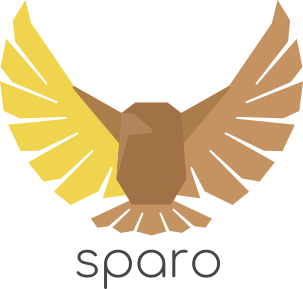

更快的克隆！
Sparo 优化了 Git 操作在大型前端 monorepo 中的性能。
主要特点
-
熟悉的界面:
sparo命令行工具 (CLI) 提供了 更好的默认设置 和 性能建议，而无需更改熟悉的git语法。（本地gitCLI 也受支持。） -
经过验证的解决方案: Git 提供了许多优化大型仓库的基础能力; Sparo 基于这些能力提供上层的解决方案。
-
简化的稀疏检出: 使用稀疏检出配置文件 来定义文件检出范围，而不是复杂的 "cones" 和 globs。
-
双重工作流程:
sparo-ci工具实现了一个专门为持续集成 (CI) 流水线优化的检出模型。 -
额外的安全措施: 避免常见的 Git 错误，例如在活动视图之外的暂存文件检出。
-
超越 Git hooks: 可选地收集您的 monorepo 中的匿名化 Git 计时数据，使您的构建团队能够为_本地_开发者体验（不仅仅是 CI）设定数据驱动的目标。
(这些指标会传输到您自己的服务，其他任何方都无法访问。)
快速演示
只需五个简单步骤即可试用 Sparo：
-
升级到最新的 Git 版本！ 对于 macOS，我们推荐使用 brew install git。对于其他操作系统，请参阅 Git 文档 了解安装说明。
-
在此演示中，我们将使用 Azure SDK，这是 GitHub 上一个大型的公共 RushJS monorepo。以下命令将检出骨架文件夹，但不会检出源代码：
# 从 NPM 全局安装 Sparo CLI
npm install -g sparo
# 使用 Sparo 克隆你的仓库
sparo clone https://github.com/Azure/azure-sdk-for-js.git
cd azure-sdk-for-js💡 目前支持 PNPM 和 Yarn 工作区的功能计划中，但尚未实现。欢迎贡献！
-
定义一个 Sparo 配置文件，描述 Git 稀疏检出的仓库文件夹子集。
# 将模板写入 common/sparo-profiles/my-team.json
sparo init-profile --profile my-team编辑创建的 my-team.json 文件并添加以下选择器：
common/sparo-profiles/my-team.json
{
"selections": [
{
// 此演示配置文件将检出 "@azure/arm-commerce" 项目及其所有依赖项：
"selector": "--to",
"argument": "@azure/arm-commerce"
}
]
}--to项目选择器 指示 Sparo 检出工作区中构建my-rush-project所需的所有依赖项。 -
在保存 my-team.json 的更改后，现在是应用它的时候了：
sparo checkout --profile my-team尝试一下！例如：
rush install
# 构建应该成功，因为 Sparo 确保依赖项目被包含在稀疏检出中：
rush build --to @azure/arm-commerce -
在日常工作中，考虑选择 镜像子命令，例如
sparo revert而不是git revert。Sparo 包装器提供 (1) 更好的默认设置，(2) 更好的性能建议，以及 (3) 可选的匿名化性能指标。示例：
sparo pull
sparo commit -m "Example command"
👍👍 这就是 快速演示 的�全部内容。有关更详细的教程，请继续阅读 入门指南。